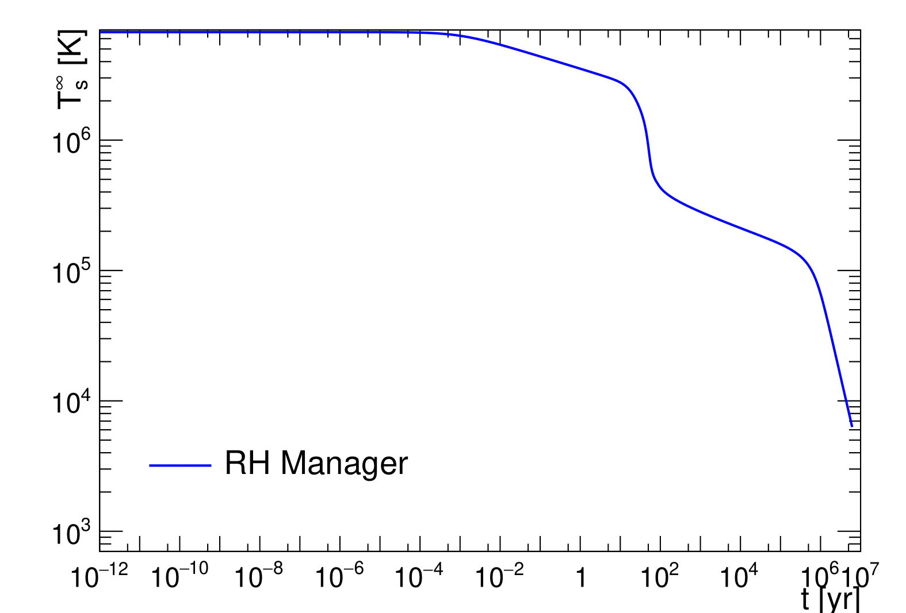
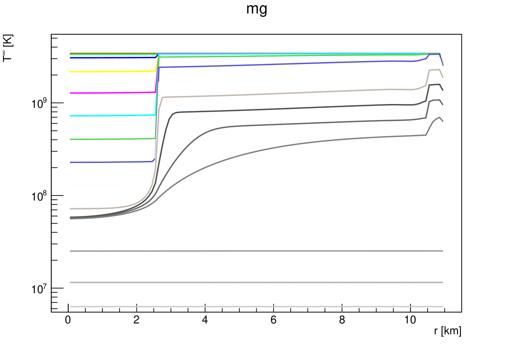

ROOT support#
There is a seamless integration of CERN ROOT libraries, used for graphics purposes only. Make automatically deduces, whether your system carries ROOT, and thereafter makes sure most programs will run regardless, though with different functionality.
For example, on a system with ROOT installed, cooling curve executable gives more extensive choice of console options:
> bin/project/Cooling/cooling_curve.out --help
usage: cooling_curve [OPTIONS]...
Evaluates temperature-time dependency based on EoS
keyword arguments:
--help, -h : show this help
--inputfile VALUE : json input file path (optional)
--pdf_path VALUE : pdf output file path (optional, default: Cooling.pdf)
--rootfile_path VALUE : root output file path (optional, default: None)
Argparse powered by SiLeader
Therefore, even running the executable as is
bin/project/Cooling/cooling_curve.out --inputfile presupplied/Inputfile/RHMconfig.json
will not only produce the console tabulation, but also a pdf preview Fig. 1.
{kind=link}

Fig. 1 Cooling curve from RHM with presupplied settings. \(2M_{\odot}\), APR4 EoS#
Some programs may not have ROOT-free executable available. For example, for the time being, project/Cooling/plot_nonequilibrium_time_profiles.cxx only runs with ROOT, as its only purpose yet is to produce a meaningful profiles preview Fig. 2.
{kind=link}

Fig. 2 Cooling profile evolving with time from RHM with presupplied settings. \(2M_{\odot}\), APR4 EoS#